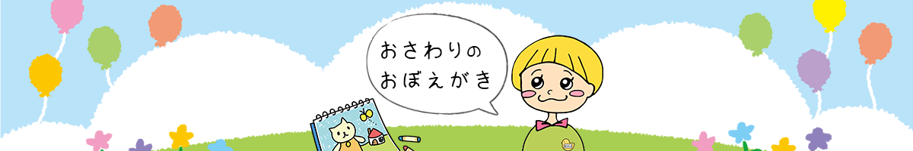

メニュー
カテゴリー
HOME
html+css
JavaScript
PHP
PhotoShop
Illustrator
Excel
Others

Others
Others
Google Chromeでブックマークを一括で削除する方法
2022/10/02
Others
無料で使えるアイコン素材11選
2022/09/25
Others
GitHub Pagesでサイトを公開する方法
2022/08/21
Others
ページの全画面をスクリーンショットで撮る方法
2022/08/07
Others
無料で使えるイラスト素材10選
2022/07/31
Others
無料で使える写真素材10選
2022/07/24
Others
AviUtlの使い方 基本編
2022/07/17
Others
AviUtlの設定方法
2022/07/10
Others
AviUtlのダウンロードとインストール
2022/07/03
Others
シンタックスハイライトの設定と使い方
2022/06/26
Others
ScreenToGifの設定と利用方法
2022/06/19
Others
スクリーンキャプチャの３つの方法
2022/06/12
Others
OneDriveの設定と利用方法
2022/06/05
Others
Internet Explorerモードに切り替える方法
2022/05/22
Others
スクリーンセーバーをオフにする方法
2022/05/15
Others
マウスポインターを含めてキャプチャーする方法
2022/04/03
Others
かざぐるマウスのダウンロードと設定
2022/03/13
Others
Windowsで良く使うショートカット
2022/03/06
Others
Vs Codeで良く使うショートカット
2022/02/27